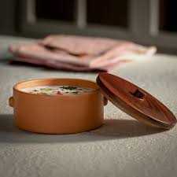

Welcome to Organic Pot Utensils
Discover the best organic pots for your plants and households.
Shop NowWhy Our Products?
Our Organic products are eco-friendly, sustainable, and perfect for all your gardening needs.A medium-sized organic pot ideal for indoor plants and a high-quality organic pot which are perfect for small plants and utensils for your cooking purposes.
Our FeatureProducts
|  |  |
 |
 |